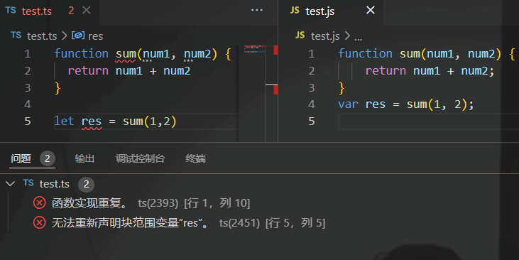

TypeScript
TypeScript
TypeScript是JavaScript的超集，包含JS的所有元素，能运行JS代码，并扩展了JS的语法。
TypeScript为JS增加了类型支持
为什么要为JS增加类型支持： JS代码中绝大部分的错误都是类型错误。从编程语言的动静来区分，JS属于动态类型的编程语言（即在执行的时候做类型检查）。对JS来说，要等到执行它的时候才能发现错误。
TypeScript的优点： typescript属于静态编程语言，在编译期进行类型检查，这样可以在代码运行前就发现错误，可以大大减少找Bug、改Bug的时间。
除此之外，TS还支持最新的ECMAScript语法，可以让你走在前端技术的最前沿。各大前端框架（例如Vue、React）都使用了TS
开始
我们需要全局安装typescript，才能使用它。
它用来将ts代码转化成js代码
1 | npm i -g typesript |
使用typescript书写的文件后缀名是.ts
让我们来创建一个简单的ts文件
1 | function sum(num1, num2) { |
我们需要在终端使用命令tsc xxx.ts来编译ts文件，使用这个命令之后会在同一个目录下生成对应的js文件
但是，这个时候我们会发现终端报错了，原因是ts和相应的js发送了命名冲突的问题

我们可以通过tsc --init来生成ts配置文件tsconfig.json，这样就可以解决ts和js冲突的问题。但是，这样操作之后ts文件中又出现了新的问题
我们暂时可以通过在tsconfig.json中将"strict": true项注释掉来解决。（具体问题会在之后说明）
还有一个问题就是，我们每改动一次ts文件，就需要执行tsc xxx.ts来手动编译，十分的不方便。
我们可以在安装npm i -g ts-node来实现保存文件后自动编译，再运行js代码
之后我们只需要用ts-node xxx.ts命令就可以了
TS常用类型
TS在JS的基础上额外增加了：类型系统
JS也有类型（比如number、string等），但是JS不会检查变量的类型是否发生变化 ，而TS会检查。
例如：在ts中我们定义了一个number类型的变量，当我们将他赋值为一个string时，ts就会报错（在js中是不会报错的）

TS常用基础类型分为两类： 1. js已有类型 2. ts新增类型
- js已有类型
原始类型：number/string/boolean/undefined/symbol
引用类型：数组，对象，函数 - ts新增类型
联合类型、自定义类型（类型别名）、接口、元组、字面量类型、枚举、void、any等
TS类型注解
示例代码：
1 | let num:number = 20 |
说明： 代码中的:number就是类型注解
作用： 为变量添加类型约束